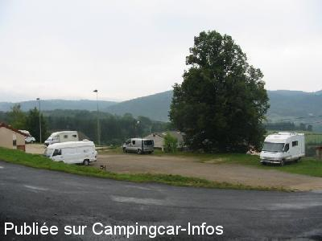
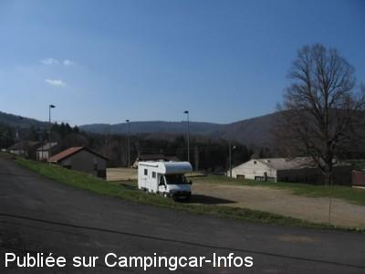

ASN = Aire de services avec stationnement nuit possible de :
LE LAC D' ISSARLÈS
(N° 314)
Accès/adresse :
Le Village
07470 LE LAC D'ISSARLÈS
07470 LE LAC D'ISSARLÈS
Latitude : (Nord) 44.81975° Décimaux ou 44° 49′ 11′′
Longitude : (Est) 4.06259° Décimaux ou 4° 3′ 45′′
Tarif : 2015
Stationnement, services, électricité, douche : 11 €
Taxe de séjour + 13 ans : 0,25 €
Type de borne : Autre
Services :


Accès handicapés
Restauration
Autres informations :
Ouvert du 01/05 au 31/10
Tél office du Tourisme :
+33 (0)466 462 006

Le 02/10/2005 par serge-24

Le 17/04/2005 par
de
Marc
le 18/06/2015 :
§ très belle aire calme avev douche wc électricité et eau mais 11€ maintenant celà les vaux
§ très belle aire calme avev douche wc électricité et eau mais 11€ maintenant celà les vaux
de
pierre allouy
le 23/08/2013 :
le système d evacuation des eaux usees pas tres au point
le système d evacuation des eaux usees pas tres au point
de
delph
le 07/09/2012 :
superbe aire, agreable, wc et douche gratuites, electricitée aussi
trois jours magnifique pour pas cher!!!
superbe aire, agreable, wc et douche gratuites, electricitée aussi
trois jours magnifique pour pas cher!!!
de
Alexandra et Cyrille
le 29/05/2012 :
§
Super aire très bien située ,à deux pas des commerces,du lac et pleins de ballades à faire autour;pourtant j'avais au départ un gros à priori concernant ce parking à 8€50,mais finalement une aire tres pratique ,avec éléctricité,eau ,douche et WC ;et egalement adaptée aux handicapés;à mes yeux une aire à reccommander .
§
Super aire très bien située ,à deux pas des commerces,du lac et pleins de ballades à faire autour;pourtant j'avais au départ un gros à priori concernant ce parking à 8€50,mais finalement une aire tres pratique ,avec éléctricité,eau ,douche et WC ;et egalement adaptée aux handicapés;à mes yeux une aire à reccommander .
de
Michel&Maée
le 16/07/2011 :
De passage en juillet pour trouver une aire très très chargée. Normal pour la saison, contestable pour les conditions de confort car on est litéralement les uns sur les autres. Un maximum de véhicules sur un si petit terrain et aucune conversation ou programme télé n'ont plus de secret pour les autres !!!
De passage en juillet pour trouver une aire très très chargée. Normal pour la saison, contestable pour les conditions de confort car on est litéralement les uns sur les autres. Un maximum de véhicules sur un si petit terrain et aucune conversation ou programme télé n'ont plus de secret pour les autres !!!
de
Roncin
le 20/06/2011 :
§
Aire au calme (à proximité du lac) avec commodités : douche, WC, eau chaude et électricité pour la somme de 8,5 euros. Belle région avec de nombreuses promenades pédestres et/ou VTT
§
Aire au calme (à proximité du lac) avec commodités : douche, WC, eau chaude et électricité pour la somme de 8,5 euros. Belle région avec de nombreuses promenades pédestres et/ou VTT
de
canu
le 05/10/2010 :
Aire très bien située, au calme et près du lac, idéale pour des promenades ou la baignade, un peu chère (8€,50 / nuit en septembre), mais bon, il y a toutes les commodités. §
Aire très bien située, au calme et près du lac, idéale pour des promenades ou la baignade, un peu chère (8€,50 / nuit en septembre), mais bon, il y a toutes les commodités. §
de
AUDRAIN, Gilles
le 29/07/2010 :
Trois jours en juillet, aire bien située dans le village et près du lac et plages. Bon accueil du préposé, Eau et électricité à chaque emplacement. Toilettes et douche à disposition. Mais, impossible de vidanger. Plateforme trop petite, évacuation calée près des sanitaires et en contrepente. Vidange effectuée sur une aire proche à Coucouron.
Trois jours en juillet, aire bien située dans le village et près du lac et plages. Bon accueil du préposé, Eau et électricité à chaque emplacement. Toilettes et douche à disposition. Mais, impossible de vidanger. Plateforme trop petite, évacuation calée près des sanitaires et en contrepente. Vidange effectuée sur une aire proche à Coucouron.
de
francou
le 10/09/2009 :
Aire avec WC, douches, lavabo/vaisselle, eau chaude, à 250m de la plage du lac, proche des commerces. 8€/nuit (un peu cher) et dalle de vidange mal inclinée. Sinon, stationnement agréable et calme.
Aire avec WC, douches, lavabo/vaisselle, eau chaude, à 250m de la plage du lac, proche des commerces. 8€/nuit (un peu cher) et dalle de vidange mal inclinée. Sinon, stationnement agréable et calme.
de
PINAI
le 31/07/2009 :
Aire qui a le mérite d'exister, mais un peu chère. Nous y avons passé une nuit puis direction le camping municipal (4 jours de repos avec des gens sympas, lac et feu d'artifice du 14/07 magnifique). Nous y retournons l'année prochaine car Sasha, notre York, s'est fait une chérie Yorkette.
Aire qui a le mérite d'exister, mais un peu chère. Nous y avons passé une nuit puis direction le camping municipal (4 jours de repos avec des gens sympas, lac et feu d'artifice du 14/07 magnifique). Nous y retournons l'année prochaine car Sasha, notre York, s'est fait une chérie Yorkette.
de
LE ROY
le 19/07/2008 :
De passage fin juin, aire occupée pour moitié par des gens du voyage avec caravanes, fourgons, voitures, etc... Suite à mes remarques, proposition de l'encaisseur de se rendre pour le même tarif (8 €) au camping !!! Nuit calme par ailleurs...
De passage fin juin, aire occupée pour moitié par des gens du voyage avec caravanes, fourgons, voitures, etc... Suite à mes remarques, proposition de l'encaisseur de se rendre pour le même tarif (8 €) au camping !!! Nuit calme par ailleurs...
de
malochet
le 07/10/2006 :
Temperature 6° (on est à 1000 m), endroit très calme, à deux pas du lac (tour à pied en 1h30 ou VTT), 8 emplacements électrifiés, la vidange des eaux usées est (encore une fois) installée à l'envers de la pente. Le garde passe vers ## pour collecter les 8€, plutôt cher compte tenu de la saison et la situation géographique!
Temperature 6° (on est à 1000 m), endroit très calme, à deux pas du lac (tour à pied en 1h30 ou VTT), 8 emplacements électrifiés, la vidange des eaux usées est (encore une fois) installée à l'envers de la pente. Le garde passe vers ## pour collecter les 8€, plutôt cher compte tenu de la saison et la situation géographique!